Lamis Ghoualmi
AI & ML Solutions Engineer | Microsoft Fabric · Azure OpenAI · Power BI
Agentic AI & Data Workflows | Scalable Analytics Systems
IEEE · Elsevier · Springer Published | Conference Speaker
About Me
I am an AI & ML Solutions Engineer specializing in designing intelligent, scalable analytics systems that transform complex institutional data into actionable intelligence. I architect end-to-end data engineering pipelines and agentic AI solutions using Microsoft Fabric, Azure AI Foundry, and Power BI — embedding AI directly at the data foundation layer to drive enterprise-grade decision-making.
Holding a PhD in Computer Science awarded With High Honors, with a research foundation in bio-inspired AI, biometric authentication, and machine learning optimization, I bring rare depth to every system I build. My work spans healthcare analytics, environmental health data engineering, and enterprise AI integration across higher education institutions.
A published researcher across IEEE, Elsevier, and Springer with 160+ citations and an h-index of 6, and a recognized conference speaker with 5 professional IT presentations, I uniquely bridge rigorous academic research and hands-on enterprise AI engineering — translating cutting-edge AI advances into scalable, governed, production-ready systems.
Keywords: Agentic AI, Microsoft Fabric, Azure OpenAI, Power BI, Data Engineering, Machine Learning, Biometric Authentication, Healthcare Analytics, ETL Pipelines, Enterprise Analytics.
Experience
Data & AI Solutions Engineer (Software Analyst III)
University of Tennessee, Knoxville · Full-time
Jun 2023 – Present · Knoxville, Tennessee, United States · Hybrid
- Designed and led end-to-end Project Management Dashboard development leveraging Microsoft Fabric architecture.
- Built and deployed multiple Power BI dashboards spanning Project Management, Enrollment Management, Human Resources, and more — providing actionable insights for decision-making.
- Developed robust ETL pipelines using Oracle Data Integrator (ODI), PL/SQL, and SQL Server; created data marts, views, procedures, and jobs for Oracle and SQL Server environments.
- Automated data workflows leveraging Fabric pipelines and ODI for efficient, scalable processing.
- Presented proof-of-concept projects and end-to-end architectures at internal symposiums and external conferences, showcasing AI and ML integration for higher education challenges.
- Partnered with operations, IT teams, and senior stakeholders to identify requirements, resolve data integration issues, and ensure seamless implementation of analytics solutions.
- Applied advanced data cleaning, transformation, and AI-driven analytics to enhance data integrity, generate predictive insights, and support strategic institutional decisions.
AI & ML Research Scientist (Biometrics & Healthcare Analytics)
University Abdelhamid MEHRI Constantine 2 · Contract
Jan 2021 – Jan 2023 · Remote
- Architected an end-to-end data engineering pipeline on the UCI Chronic Kidney Disease dataset; performed EDA to surface actionable insights and clinically relevant patterns.
- Designed and trained a deep learning model for kidney disease prediction, applying advanced feature engineering and model optimization to maximize diagnostic accuracy.
- Built automated ML pipelines for heart disease prognosis using the 2020 CDC dataset, engineering predictive features and fine-tuning classification architectures for clinical decision support.
- Engineered a multi-objective optimization framework for palm vein biometric authentication, jointly optimizing authentication accuracy and feature vector compactness through a custom AI-driven loss function.
- Implemented bio-inspired metaheuristic optimizers including Particle Swarm Optimization (PSO) and Artificial Bee Colony (ABC) for hyperparameter tuning and feature subset selection.
Postdoctoral Research Associate (AI-Driven Environmental Exposome & Cardiovascular Health Analytics)
University of Tennessee, Knoxville · Contract
Nov 2019 – Dec 2020 · Knoxville, Tennessee, United States · Hybrid
- Led end-to-end data engineering and ML pipeline on large-scale public health exposome (PHE) data at the Langston Laboratory, investigating the impact of environmental factors on population health outcomes.
- Architected a robust data cleaning and preprocessing pipeline handling big data challenges including duplicates, missing values, outliers, and low-variance features.
- Designed an intelligent feature selection framework leveraging Mutual Information and Decision Tree algorithms to identify statistically significant PHE variables, reducing dimensionality while preserving predictive signal.
- Applied Pearson correlation analysis to quantify inter-variable relationships, surface multicollinearity patterns, and validate feature independence for downstream modeling.
- Engineered a graph-theoretic representation layer mapping correlated feature subsets into densely connected paraclique subgraph structures, providing a novel topological view of environmental feature interactions.
Assistant Professor
University Abdelhamid MEHRI Constantine 2 · Full-time
Sep 2017 – Nov 2019 · Constantine, Algeria · On-site
- Delivered lectures to sophomore and freshman students; advised multiple undergraduate students through their projects.
- Courses taught: Theory of Formal Languages, Multimedia Image Processing, Network Fundamentals, Introduction to Algorithmics.
Portfolio
This portfolio showcases selected projects spanning enterprise analytics, data science, machine learning, and AI engineering — drawn from professional work, academic research, and independent exploration. Several ongoing projects are not yet listed here.
Scientific research publications
(Google scholar)
Teaching experience

Marketing dataset (Python, SQL, Tableau)
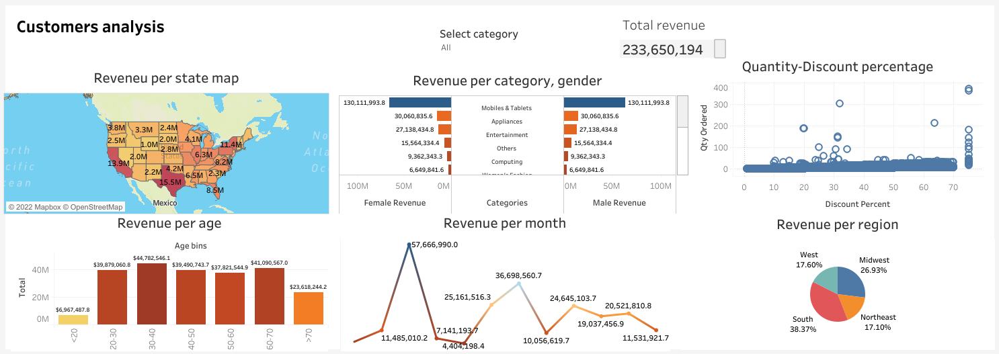
Customer Anaysis (Tableau)
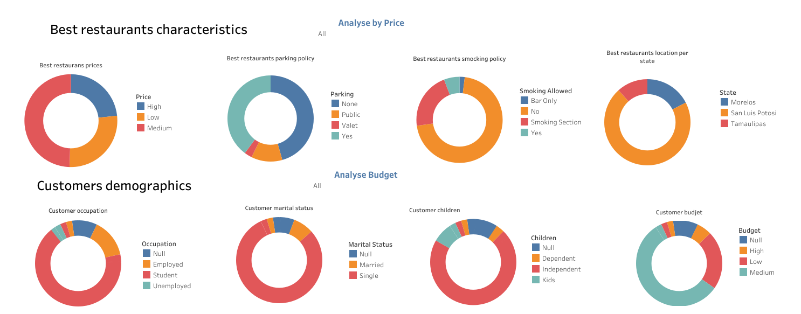
Mexico Restaurant Ratings (SQL and Tableau)
SQL queries for diffrents projects.
upcoming project
DATA ANALYSIS PROJECTS
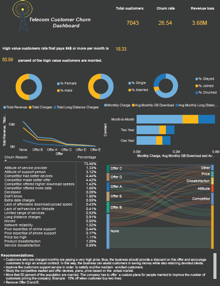
Telecom Customer Churn (Power Bi)
App: Exploratory Data Analysis App (Python)
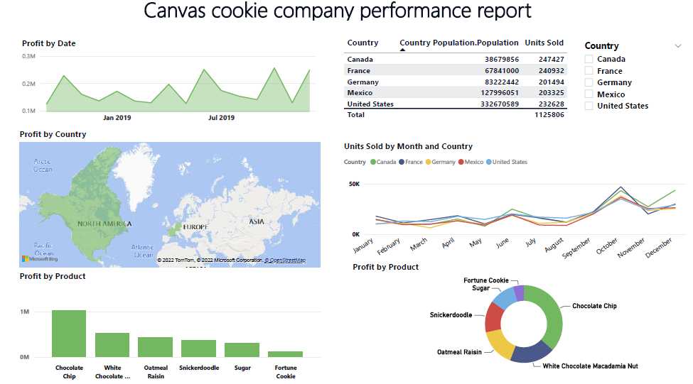
Canvas Coockie Performance (Power Bi)
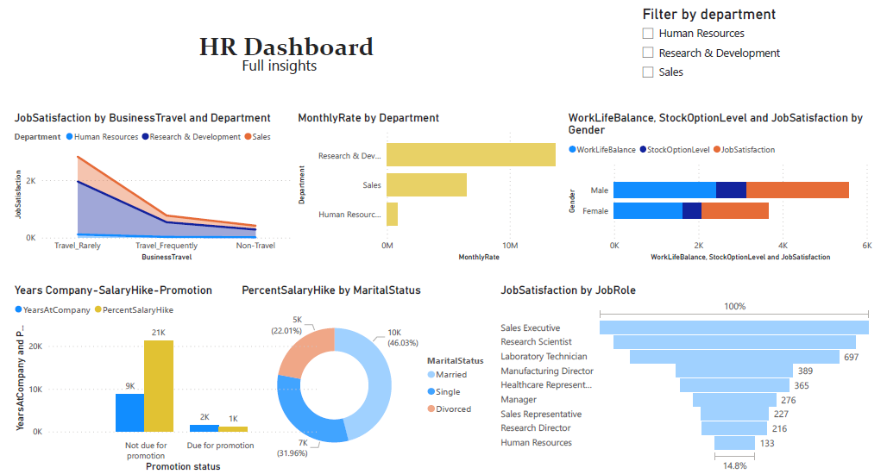
Human Ressource analysis (Power Bi)
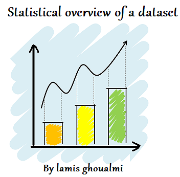
App: Statistical description of a dataset for data cleanning (Python)
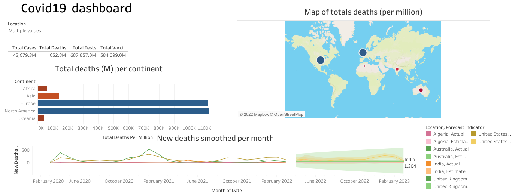
Covid 19 deaths visualization (Tableau)
Standard data cleanning (Python)
upcoming project
DATA SCIENCE PROJECTS
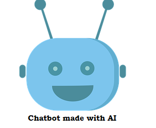
App: Chatbot made with openAI and streamlit (Python)
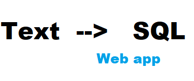
App: Translate natural language to SQL queries (Python)
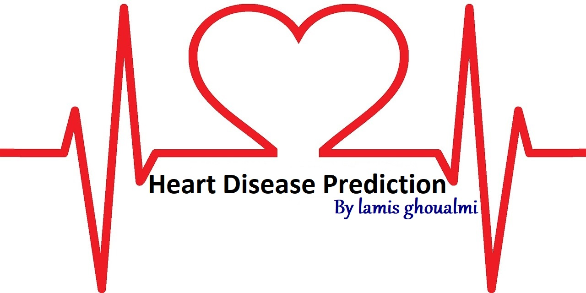
App: Personal Key Indicators of Heart Disease, machine learning model (Python)
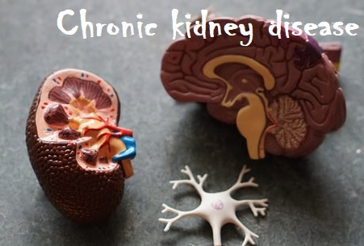
Chronic kidney disease prediction (Python)
Heart disease prediction (Python)
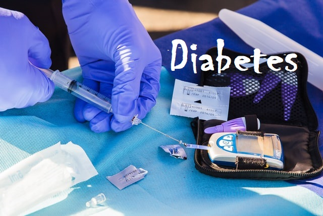
Diabetes prediction (Python)
Feature selection of load-digit dataset Python (Sklearn)